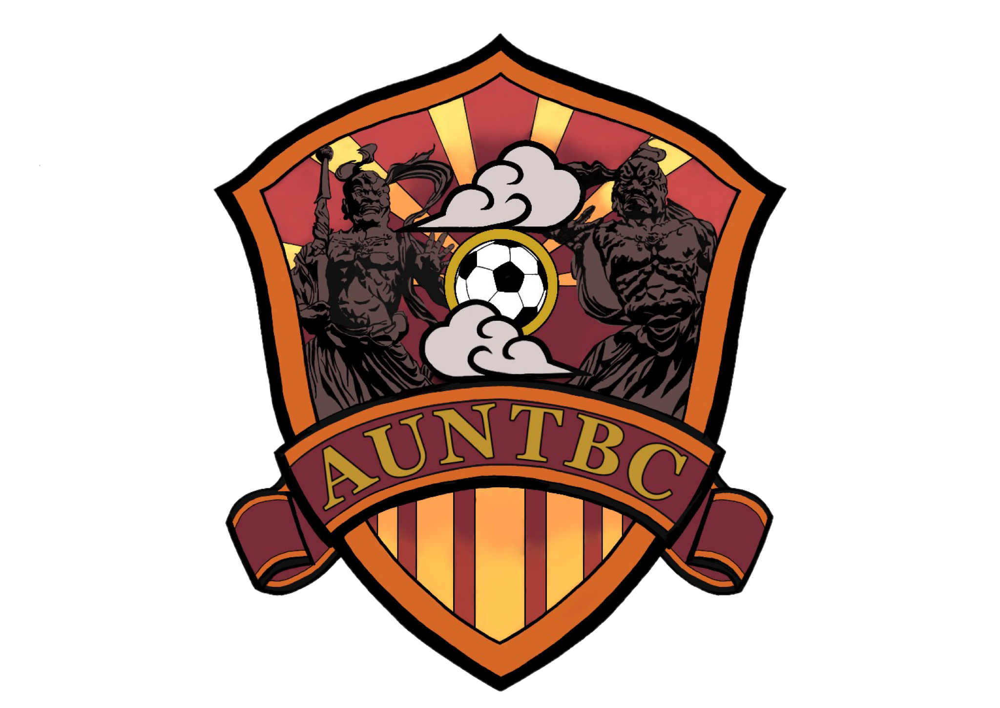

令和３年度に入り、大きなイベントが決まりました。
2月２８日、肥前体育館にて我ら、AUNTBC・
伽藍堂・ハングアウトの３チームで試合を行い
ます！ ３チーム揃って試合をすることは初めて
なのですごく楽しみです！気軽に試合を観に来て
構いませんので、どうぞよろしくお願いします！
〜2/28 12:00~16:00 肥前体育館〜

R3.1.27 私たちAUNTBCのエンブレムがようやく
完成しました。エンブレム作成に協力してくれた
井上裕汰選手ありがとうございました！！
TBC設立からまだ２年ほどの年月しか経って
いませんが、皆様のおかげで活動が出来ています！
これからもよろしくお願いします！
令和２年度、12月28日 第二回ウィンターカップ
無事に終えることができました！
参加してくださったみなさま本当にありがとう
ございました！
結果は鏡浜チームの優勝となり賞金２万円と
今大会得点王 増本 大河選手となりました！
令和２年度、11月29日より阿吽TBCで鍋会をしました。
12月28日に開催する「ウィンターカップ」のチームを
決めました！予算についてはまた追々決めていく
つもりです！阿吽TBCの公式サイトも今日から公開
したので、日々の更新内容をチェックしてください！
＊写真は今日の一部です。
令和２年度、11月8日より練習試合をさせていただきました。
阿吽TBCとコヨーテ等で試合を回しましたが試合結果
に関してはどのチームも勝ったり、負けたりして試合
レベルは同等で、選手の皆さんも楽しくサッカーを
楽しんでいる様子でした！ウィンターカップまで
１ヶ月間しかありませんので、もう一度会議を
開いて細かい部分を決めましょう！！！
令和２年度10月15日 阿吽TBCの今後の活動について
会議しました。そして、12月28日に毎年、阿吽で大会を開く
「ウィンターカップ」を開催に決まりました！
興味がある方は、ぜひ気軽に観戦してください！
賞金をかけて試合を行いますので、参加する際は参加費を
を徴収します。また、11月8日に福岡のチームの「コヨーテ」
との試合が決まり、次第には県外のチームとの交流
を深めていこうと思います！
令和２年度、9月に
阿吽TBCのセカンドユニホームが決まりました！
ファーストユニホームに引き続きとても良いデザインですね！
12月末にあるTBCウィンターカップには
ユニホームが届くと思います。
ウィンターカップの詳細に付いてはまた近々報告します！
ぜひ気軽に見に来てください！